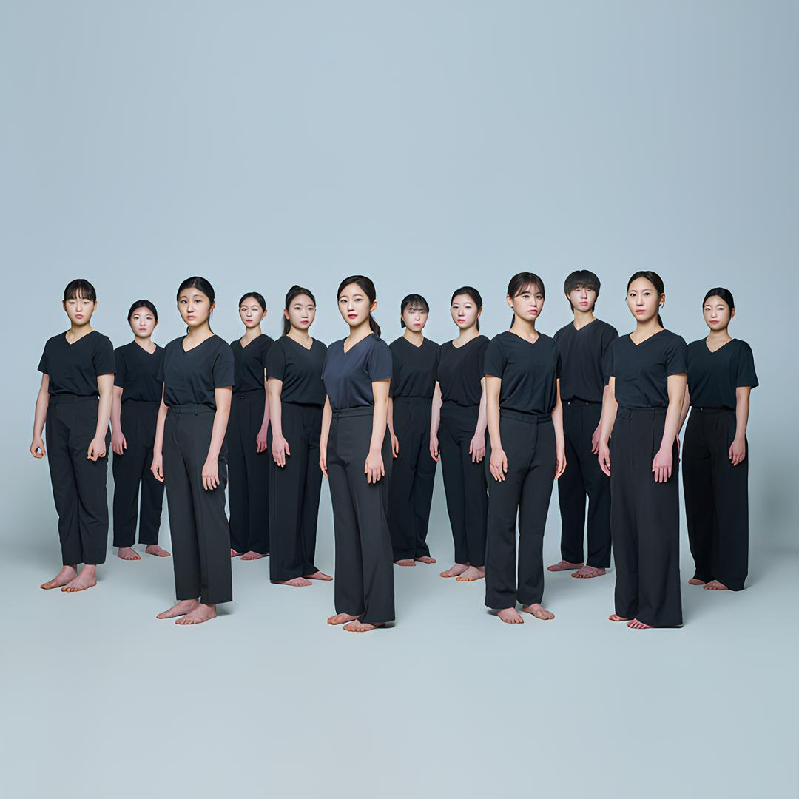

PERFORMANCE
컨템포러리 댄스Contemporary Dance
Countertechnique Class
작품내용
Countertechnique* class Showcase
1학년 학생들이 한 학기 동안 배운 카운터테크닉의 exercise들을 쇼케이스 형식으로 구성하여 시연한다.
*Countertechnique(카운터테크닉)
네덜란드 출신의 유명 안무가 Anouk van Dijk(아눅 반 다이크)가 개발한 Countertechnique(카운터테크닉)은 무용수들이 움직이는 과정 속에서 몸과 마음을 연결하여 그 순간 필요한 것을 인식해 적절한 정보를 선정하고 적용하는 것을 말합니다. 체계적으로 구성된 exercise를 통해 카운터테크닉 수업은 리허설 및 공연을 준비하기 위한 무용수들의 신체 훈련 방법입니다.
Countertechnique 참고자료
- 지도교수 및 구성 |
- 미정
- 리허설 디렉터 |
- 김명선
- 음악 |
- 미정
- 출연 |
- 고나영, 권미래, 김민채, 김태희, 서지수, 소예진, 오현서, 이주희, 최지유
